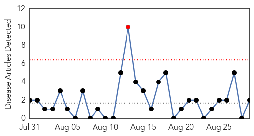

Pertussis
30-Day Web Trend
1 alerts, 0 warnings

30-Day Twitter Trend
0 alerts, 0 warnings

Article Locations

Article Confidences

Top Articles:
Top Tweets:
-
No tweets found for Aug 29, 2014
Cholera
30-Day Web Trend
1 alerts, 1 warnings

30-Day Twitter Trend
6 alerts, 0 warnings

Article Locations

Article Confidences

Top Articles:
- 0.968
- Health : 200,000 people will be vaccinated against cholera
- 0.963
- Nepal Flooding Social Media 3W Report - Nepal
- 0.961
- cholera down but malaria and parasitic disease up – MSF
- 0.930
- No respite for South Sudan: cholera down but malaria, parasitic disease up
- 0.836
- TRF-No respite for South Sudan: cholera down but malaria, parasitic disease up - MSF
- 0.775
- South Sudan Has a Choice... Between Horror and Misery
Top Tweets:
-
No tweets found for Aug 29, 2014